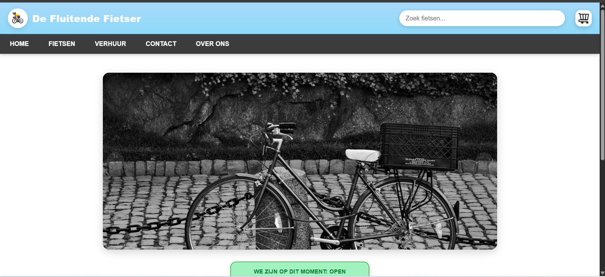
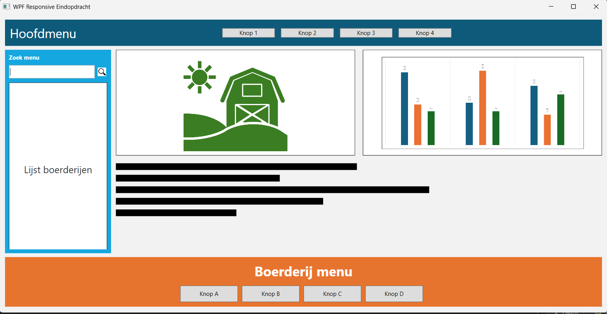
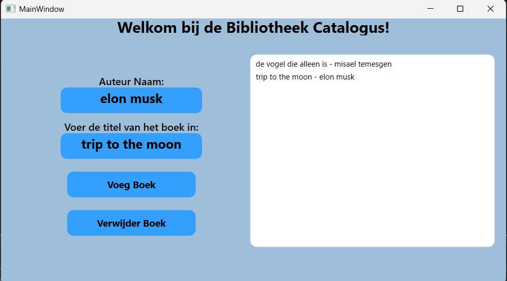

Portfolio website
Ik heb deze website gemaakt om mijn werk, mijn persoonlijkheid en mijn ambities op een moderne en overzichtelijke manier te tonen.
Portfolio projecten
Ik heb de meeste ervaring opgebouwd met HTML, CSS, JavaScript, PHP en C#. Deze projecten laten zien dat ik niet alleen functionaliteit kan bouwen, maar ook aandacht heb voor structuur en uitstraling.
Focus
Ik heb deze website gemaakt om mijn werk, mijn persoonlijkheid en mijn ambities op een moderne en overzichtelijke manier te tonen.
Een project dat ik in mijn vrije tijd heb gemaakt om te oefenen met formulieren, styling en backend-logica. Test gegevens: demo@example.com, Welkom123!
Open live project

Een interactieve webwinkelopdracht met een duidelijke structuur en visuele opbouw gemaakt samen in een groep tijdens school opleiding.

Open live projectEen overzichtelijke takenlijst waarin je taken kunt toevoegen, verwijderen en markeren als voltooid.
Open live project

Een oefening gericht op responsieve interfaces en het praktisch toepassen van C# in een ontwikkelcontext.

Een kleine tool waarin temperatuur wordt omgezet met een duidelijke en eenvoudige interface.
Open live project

Een project waarin ik met C# en een database werkte om een eenvoudige bibliotheekcatalogus te bouwen.


